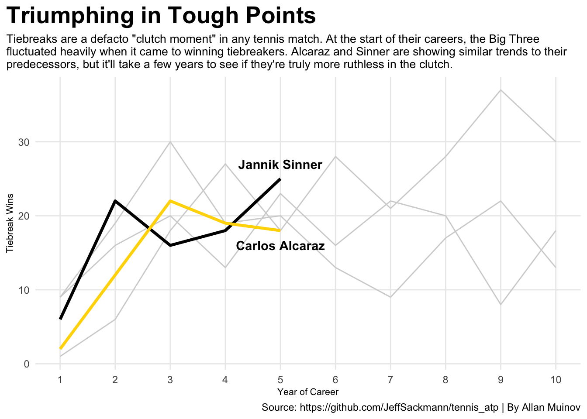
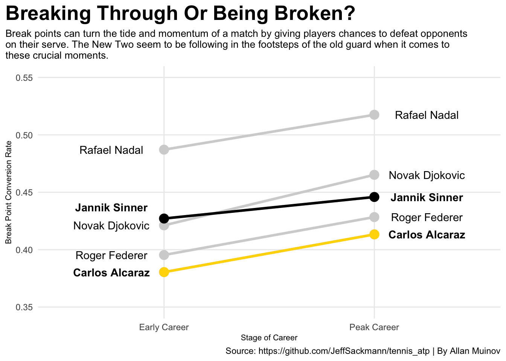
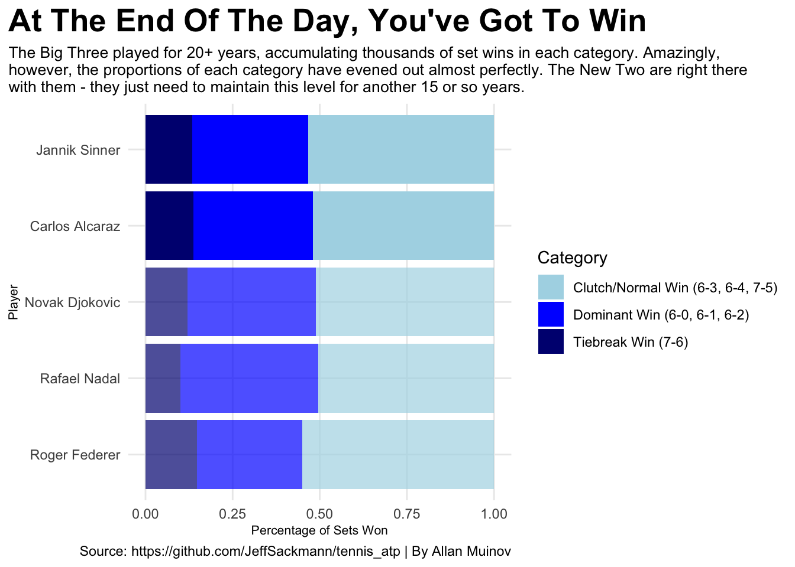

Are Tennis’s “New Two” As Clutch As The “Big Three”?
tennis
ATP
racquet sports
Author
Allan Muinov
Published
December 7, 2025
Over the past 20 years, we have been fortunate enough to witness something unprecedented in the world of mens’ tennis. Three players, all masters of their craft, battling it out for almost every major tournament, accolade, ranking, and everything in between. Roger Federer. Rafael Nadal. Novak Djokovic. Better known as the “Big Three,” these titans of tennis spent two decades dominating a sport where individual success means everything. Some perspective on each of these players’ legendary careers:
Roger Federer: 1998-2022, 103 Singles Titles, 20 Grand Slam Titles Rafael Nadal: 2001-2024, 92 Singles Titles, 22 Grand Slam Titles Novak Djokovic: 2003-Present, 101 Singles Titles, 24 Grand Slam Title
Unfortunately, all good things must come to an end. With Federer and Nadal already having retired and Djokovic soon to follow at the age of 38, rising stars have been taking over the sport. Carlos Alcaraz and Jannik Sinner, colloquially known as the “New Two,” are the big names in tennis today, hovering atop the rankings and winning the majority of competitions. Turning pro around ages 16-18, they would appear, at first, to be on track to catch up to the Big Three, players they idolized as children. The latter legends, though, weren’t just winners - they were supremely clutch where it mattered. From tiebreakers to break points, they took control when everything was on the line. Any tennis player can speak to the importance of not cracking under pressure in moments like these, making it all the more impressive that they managed to keep up that level of play for over 20 years. The recent changing of the guard in mens’ tennis now begs the question - are the “New Two” as clutch as the “Big Three” were, and more importantly, can they keep it up for another decade and a half?
Tiebreakers in tennis occur when the score of a set is tied at 6-6. Points are played until a player reaches 7 or 10 (depending on the format of the match), and they win the set. On their day, even a bad player can turn the tide of a match by winning these.
Code
### Load Librarieslibrary(tidyverse)library(ggrepel)library(ggnewscale)### Load, Merge, and Clean Data}tennis_files <-list.files("tennis_atp-master",pattern ="atp_matches_\\d{4}\\.csv",full.names =TRUE)# Merge all files to create master dataframeall_matches <- tennis_files |>map_df(read_csv)# Limit dataframe to only Federer, Nadal, Djokovic, Sinner, and Alcarazbig_five <-c("Roger Federer", "Rafael Nadal", "Novak Djokovic", "Jannik Sinner", "Carlos Alcaraz")all_matches <- all_matches |>filter(winner_name %in% big_five | loser_name %in% big_five) |>mutate(tourney_id =gsub("\\-.*", "", tourney_id) ) |>rename(year = tourney_id) |>mutate(year =as.numeric(year) )### Line Chart Dataline_data <- all_matches |>separate( score,into =paste0("set", 1:5),sep =" ",fill ="right" )# Make data longline_long <- line_data |>pivot_longer(cols =starts_with("set"),names_to ="set_number",values_to ="set_score",values_drop_na =TRUE )# Filter only tiebreak setstiebreak_sets <- line_long |>filter(str_detect(set_score, "7-6|6-7")) |>mutate(clean =gsub("\\(.*\\)", "", set_score),tb_winner =if_else(str_starts(set_score, "7"), winner_name, loser_name ),tb_loser =if_else(tb_winner == winner_name, loser_name, winner_name ) )# Count tiebreak wins per playerline_final <- tiebreak_sets |>group_by(year, tb_winner) |>summarize(tb_wins =n(), ) |>filter(tb_winner %in% big_five)# Standardize by year of career and include only first 10 yearsline_final_std <- line_final |>group_by(tb_winner) |>arrange(year) |>mutate(career_year =row_number()) |>filter(career_year <=10)# Sinner onlysinner_line <- line_final_std |>filter(tb_winner =="Jannik Sinner")# Alcaraz onlyalcaraz_line <- line_final_std |>filter(tb_winner =="Carlos Alcaraz")# Big Three onlybig_three <- line_final_std |>filter(tb_winner %in%c("Roger Federer", "Rafael Nadal", "Novak Djokovic"))### Plot Line Chartggplot() +geom_line(data = big_three, aes(x = career_year, y = tb_wins, group = tb_winner), color ="lightgrey") +geom_line(data = sinner_line, aes(x = career_year, y = tb_wins), color ="black", size =1.2) +geom_line(data = alcaraz_line, aes(x = career_year, y = tb_wins), color ="gold", size =1.2) +geom_text(data = sinner_line |>filter(career_year ==5), aes(x = career_year, y = tb_wins +2, label = tb_winner), fontface ="bold") +geom_text(data = alcaraz_line |>filter(career_year ==5), aes(x = career_year, y = tb_wins -2, label = tb_winner), fontface ="bold") +scale_x_continuous(breaks =seq(1, 10, 1), ) +labs(title ="Triumphing in Tough Points",subtitle ="Tiebreaks are a defacto \"clutch moment\" in any tennis match. At the start of their careers, the Big Three \nfluctuated heavily when it came to winning tiebreakers. Alcaraz and Sinner are showing similar trends to their \npredecessors, but it'll take a few years to see if they're truly more ruthless in the clutch.",x ="Year of Career",y ="Tiebreak Wins",caption ="Source: https://github.com/JeffSackmann/tennis_atp | By Allan Muinov" ) +theme_minimal() +theme(plot.title.position ="plot",plot.title =element_text(size =20, face ="bold"),plot.subtitle =element_text(size =10),axis.title =element_text(size =8),panel.grid.minor =element_blank() )

Sinner and Alcaraz already win about as many tiebreakers per season as the Big Three did though, and it took them about the same amount of time (if not less), to reach that point. With such variation in tiebreak wins between the five players, the New Two have a chance to prove themselves worthy of legend status if they continue succeeding in these pivotal moments.
Break points, or points where players have a chance to win a game their opponent is serving on, are only slightly more common than tiebreakers. Whereas the latter may help players in the grand scheme of a match, the former are the best opportunities to quickly take control of a set. Thus, break points are some of the highest-pressure moments for both players on court, and can’t be ignored.
Code
### Slope Chart Dataslope_data <- all_matches |>mutate(year = year,player = winner_name,bp_converted = l_bpFaced - l_bpSaved,bp_created = l_bpFaced ) |>select(year, player, bp_converted, bp_created) |>bind_rows( all_matches |>mutate(year = year,player = loser_name,bp_converted = w_bpFaced - w_bpSaved,bp_created = w_bpFaced ) |>select(year, player, bp_converted, bp_created) ) |>filter(player %in% big_five) |>group_by(year, player) |>summarize(bp_created =sum(bp_created, na.rm =TRUE),bp_converted =sum(bp_converted, na.rm =TRUE),bp_conversion_rate = bp_converted / bp_created )# Standardize by year of careerplayer_year <- slope_data |>group_by(player) |>arrange(year) |>mutate(career_year =row_number() )# Define early career (first five years)early_career <- player_year |>filter(career_year <=5) |>group_by(player) |>summarize(timeframe ="Early Career",bp_conversion_rate =mean(bp_conversion_rate, na.rm =TRUE) )# Define peak career (find best 3 consecutive seasons using rolling average)player_year_lag <- player_year |>group_by(player) |>arrange(career_year) |>mutate(prev_year_bp_rate =lag(bp_conversion_rate, n =1),two_year_bp_rate =lag(bp_conversion_rate, n =2),rolling_three_year_avg = (bp_conversion_rate + prev_year_bp_rate + two_year_bp_rate) /3 )peak_career <- player_year_lag |>group_by(player) |>filter(rolling_three_year_avg ==max(rolling_three_year_avg, na.rm =TRUE)) |>slice(1) |>ungroup() |>select(player, bp_conversion_rate = rolling_three_year_avg) |>mutate(timeframe ="Peak Career" )# Combine into final slope chart dataslope_data_final <- early_career |>bind_rows(peak_career)# Sinner Dataframeslope_data_sinner <- slope_data_final |>filter(player =="Jannik Sinner")# Alcaraz Dataframeslope_data_alcaraz <- slope_data_final |>filter(player =="Carlos Alcaraz")### Slope Chartggplot() +geom_line(data = slope_data_final, aes(x = timeframe, y = bp_conversion_rate, group = player), color ="lightgrey", size =1.2) +geom_point(data = slope_data_final, aes(x = timeframe, y = bp_conversion_rate, group = player), color ="lightgrey", size =4) +geom_line(data = slope_data_sinner, aes(x = timeframe, y = bp_conversion_rate, group = player), color ="black", size =1.2) +geom_point(data = slope_data_sinner, aes(x = timeframe, y = bp_conversion_rate, group = player), color ="black", size =4) +geom_line(data = slope_data_alcaraz, aes(x = timeframe, y = bp_conversion_rate, group = player), color ="gold", size =1.2) +geom_point(data = slope_data_alcaraz, aes(x = timeframe, y = bp_conversion_rate, group = player), color ="gold", size =4) +geom_text(data = slope_data_final |>filter(!player %in%c("Carlos Alcaraz", "Jannik Sinner") & timeframe =="Peak Career"), aes(x =as.numeric(factor(timeframe)) +1.25, y = bp_conversion_rate, group = player, label = player)) +geom_text(data = slope_data_final |>filter(!player %in%c("Carlos Alcaraz", "Jannik Sinner") & timeframe =="Early Career"), aes(x =as.numeric(factor(timeframe)) -0.25, y = bp_conversion_rate, group = player, label = player)) +geom_text(data = slope_data_sinner |>filter(timeframe =="Peak Career"), aes(x =as.numeric(factor(timeframe)) +1.25, y = bp_conversion_rate, group = player, label = player), fontface ="bold") +geom_text(data = slope_data_sinner |>filter(timeframe =="Early Career"), aes(x =as.numeric(factor(timeframe)) -0.25, y = bp_conversion_rate +0.01, group = player, label = player), fontface ="bold") +geom_text(data = slope_data_alcaraz |>filter(timeframe =="Peak Career"), aes(x =as.numeric(factor(timeframe)) +1.25, y = bp_conversion_rate, group = player, label = player), fontface ="bold") +geom_text(data = slope_data_alcaraz |>filter(timeframe =="Early Career"), aes(x =as.numeric(factor(timeframe)) -0.25, y = bp_conversion_rate, group = player, label = player), fontface ="bold") +scale_y_continuous(breaks =seq(0.35, 0.55, 0.05),limits =c(0.35, 0.55) ) +labs(title ="Breaking Through Or Being Broken?",subtitle ="Break points can turn the tide and momentum of a match by giving players chances to defeat opponents \non their serve. The New Two seem to be following in the footsteps of the old guard when it comes to \nthese crucial moments.",x ="Stage of Career",y ="Break Point Conversion Rate",caption ="Source: https://github.com/JeffSackmann/tennis_atp | By Allan Muinov" ) +theme_minimal() +theme(plot.title.position ="plot",plot.title =element_text(size =20, face ="bold"),plot.subtitle =element_text(size =10),axis.title =element_text(size =8),panel.grid.minor =element_blank() )

To analyze break points, a rolling average was taken to find the best three-consecutive-year break point conversion rate for each player, then compared to their early career (first five years). This was calculated as follows:
Break Point Conversion Rate (BPCR): Break Points Converted (won) / Break Points Created (all opportunities)
Something to note: Since Carlos Alcaraz and Jannik Sinner have only been playing for 5 years, we consider “Peak Career” to mean the best three years of their career thus far, based on BPCR.
All players showed an increase in BPCR over the course of their careers, but they would be hard-pressed to match the level of Rafael Nadal, who had an astonishing BPCR of 0.52 over his best three years. That is to say, he converted over half of all break points he encountered, a display of clutch ability that may never again be matched. Alcaraz and Sinner, while once again trending in the right direction, will need to show true and sustained dominance if they hope to match such results.
When all is said and done, any clutch performance a tennis player might muster up means nothing if they don’t win. Those who get their names engraved on Grand Slam trophies and go down as legends of the sport are the ones who win matches, whether dominantly or by digging in and playing with grit. Breaking it down even further, sets must be won to win matches, but how players win them can vary greatly.
Code
##### Stacked Bar Chart (SBC) Datasbc_data <- all_matches |>separate( score,into =paste0("set", 1:5),sep =" ",fill ="right" )# Make SBC data longsbc_long <- sbc_data |>pivot_longer(cols =starts_with("set"),names_to ="set_number",values_to ="set_score",values_drop_na =TRUE ) |>filter(winner_name %in% big_five) |>mutate(clean =gsub("\\(.*\\)", "", set_score) )# Categorize data by type of set winsbc_categorized <- sbc_long |>mutate(set_category =case_when( clean %in%c("6-0", "6-1", "6-2") ~"Dominant Win (6-0, 6-1, 6-2)", clean %in%c("7-5", "6-4", "6-3") ~"Clutch/Normal Win (6-3, 6-4, 7-5)", clean %in%c("7-6") ~"Tiebreak Win (7-6)",TRUE~"Other/Long Set Wins" ) ) |>filter(set_category !="Other/Long Set Wins")# Player order for chartplayer_order <-c("Roger Federer", "Rafael Nadal", "Novak Djokovic", "Carlos Alcaraz", "Jannik Sinner")# Count sets won in each category and order them by playerfinal_sbc_data <- sbc_categorized |>group_by(winner_name, set_category) |>summarize(sets_won_in_category =n(),.groups ="drop_last" ) |>rename(player = winner_name) |>rename(Category = set_category) |>mutate(total_sets =sum(sets_won_in_category),percentage_of_total = sets_won_in_category / total_sets ) |>mutate(player =factor(player, levels = player_order) )# Big Three dataframebig_three_sbc <- final_sbc_data |>filter(player %in%c("Roger Federer", "Rafael Nadal", "Novak Djokovic"))# Sinner dataframesin_alc_sbc <- final_sbc_data |>filter(player %in%c("Carlos Alcaraz", "Jannik Sinner"))### Stacked Bar Chartggplot() +geom_bar(data = big_three_sbc, aes(x = player, weight = percentage_of_total, fill = Category), alpha =0.7) +geom_bar(data = sin_alc_sbc, aes(x = player, weight = percentage_of_total, fill = Category)) +scale_fill_manual(values =c("lightblue", "blue", "navy")) +labs(title ="At The End Of The Day, You've Got To Win",subtitle ="The Big Three played for 20+ years, accumulating thousands of set wins in each category. Amazingly, \nhowever, the proportions of each category have evened out almost perfectly. The New Two are right there \nwith them - they just need to maintain this level for another 15 or so years.",x ="Player",y ="Percentage of Sets Won",caption ="Source: https://github.com/JeffSackmann/tennis_atp | By Allan Muinov" ) +coord_flip() +theme_minimal() +theme(plot.title.position ="plot",plot.title =element_text(size =20, face ="bold"),plot.subtitle =element_text(size =10),axis.title =element_text(size =8),panel.grid.minor =element_blank() )

This post focuses on the three best players of the 21st century (if not ever) and two others who only recently became poised to join their ranks, so it’s interesting to see the similarities in their performances already. Although the Big Three have won thousands of sets of each category as opposed to just a few hundred for the New Two, both groups seem to win matches in roughly the same ways, including a large percentage of clutch wins. Were a top 80-200 player to be included in this analysis instead, the results would almost certainly look quite different. Only time will tell if, in a few thousand matches, these proportions continue to align.
There’s little doubt that Carlos Alcaraz and Jannik Sinner are two of the best tennis players on tour today. Their unprecedented success only 5 years into their careers may speak for itself, but is it really time to call them the next “big thing”? At a glance, it sure looks like these “New Two” are playing the same kind of tennis their idols played their entire careers. They’re winning more and more tiebreakers each year. They convert break points often. They win clutch sets and succeed where it matters. Again, though, they’ve only played half a decade. Roger Federer, Rafael Nadal, and Novak Djokovic all played (or are playing) for the greater part of a quarter-century, and not just played, but obliterated the competition. It’s certainly not out of the question that Sinner and Alcaraz could one day do the same, but with other rising stars never far behind, this remains to be seen. What’s for certain is that fans have years of great tennis ahead. Enjoy the show, and check back for a follow-up post around 2045 or so.